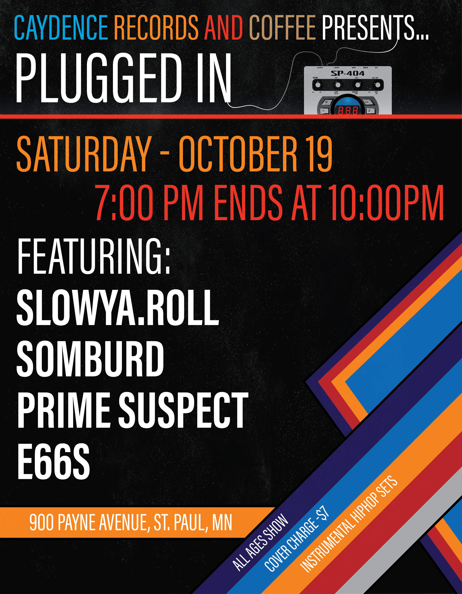
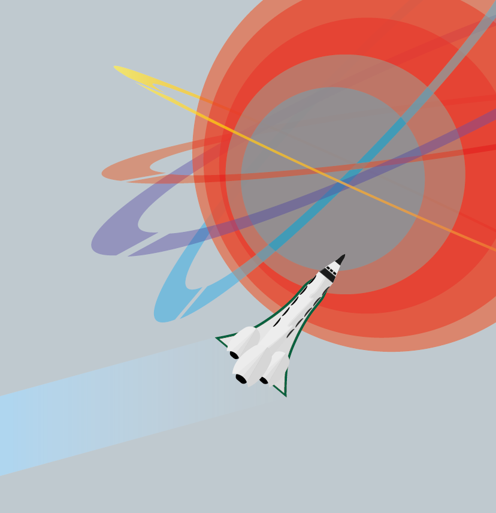
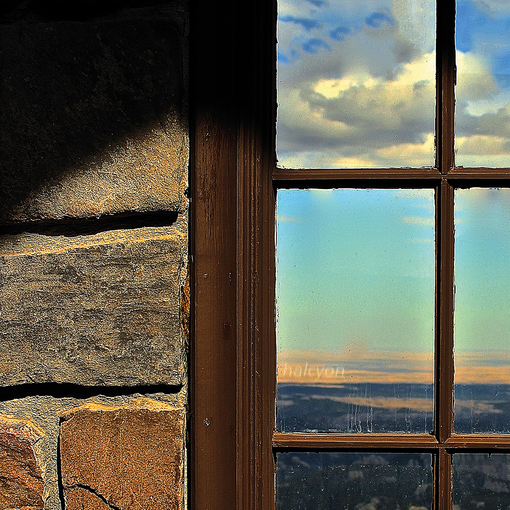
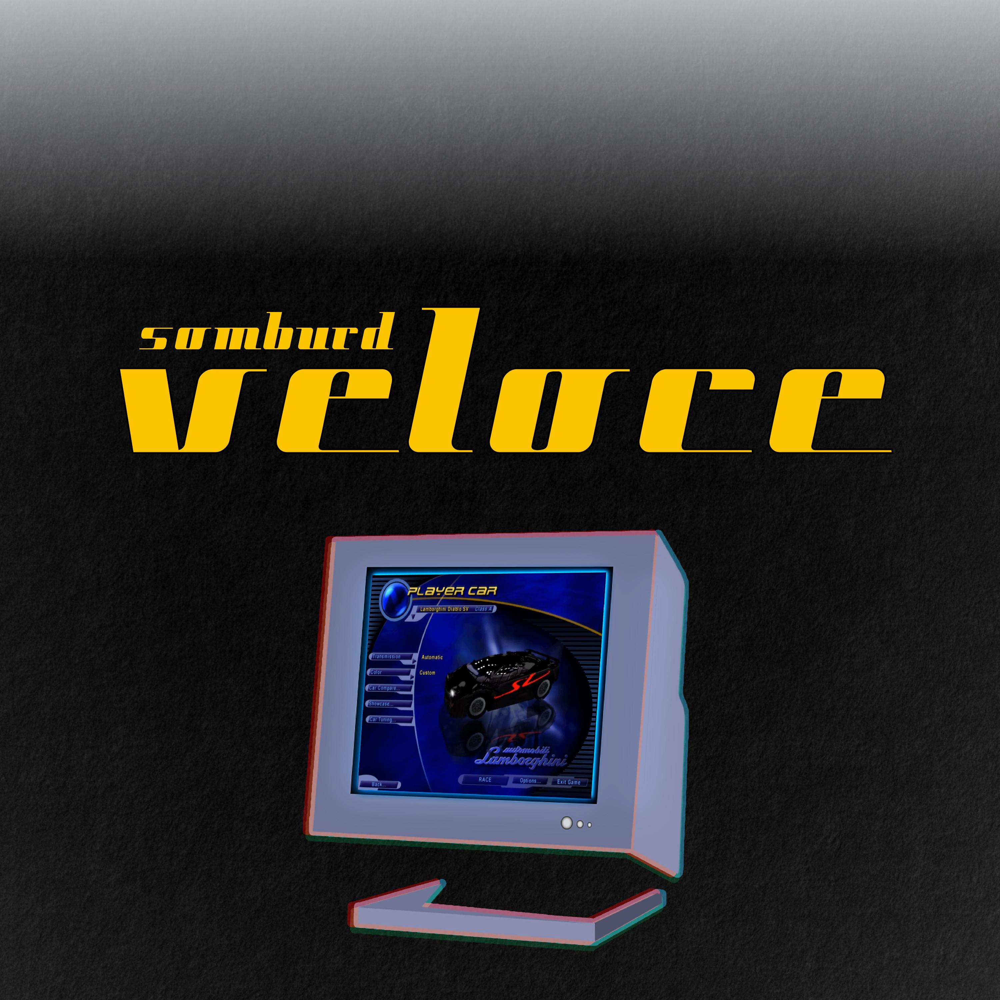

Taking a print class was one of the best decisions I have ever made. I found that formatting pages and placing elements was very enjoyable to me. Seeing an editorial come to fruition became addicting.
This project features 8 pages of layout examples. Some of the writing is original and some writing is displayed as filler. You can view the pdf here.
Poster Design
Made in Illustrator
In the music world, I am known as "somburd", and I perform live beat sets with other musicians. I was given the chance to create a poster for the event.
To the give the poster a record shop feel I found a dusty overlay to cover the graphic. Some of the color choices are heavily inspired by 80's VHS covers.

Poster Graphic
Made in Illustrator
This graphic is the base design for a poster assignment given in class, inspired by NASA promotional posters.

Album Cover
Halcyon
Like we're looking through a window... Literally. Halcyon is one of my favorite musical projects that I have completed. It is also my most sucessful release on Spotify and Soundcloud.
The album design is based around how I was feeling at the time it was made. I just had discovered what I wanted my career to be, looking through a window to an exciting future.

Album Cover
Veloce
Growing up as a kid, I loved classic Racing Games like "Need For Speed 3: Hot Pursuit".
Veloce embodies "speed", featuring fast and aggressive compositions.
I chose a type face that exemplified a sleek style. Like a car zooming past a camera leaving blurred lines behind it. Also, it features an old style monitor with a photo from the actual game. Just like the one I played on.

EP Cover
Intrstllr Crane
During design practice, I happened to create a paper crane graphic. The music I was creating at the time had a deep space vibe to it and it felt right to include "interstellar" in the name with a related graphic.